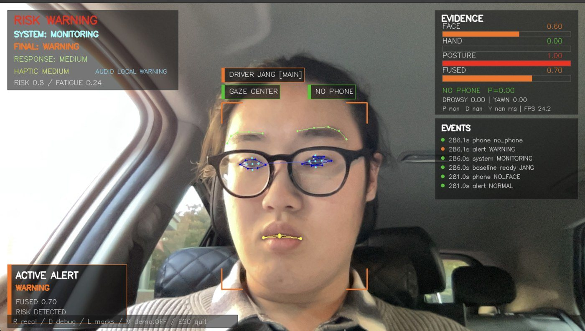
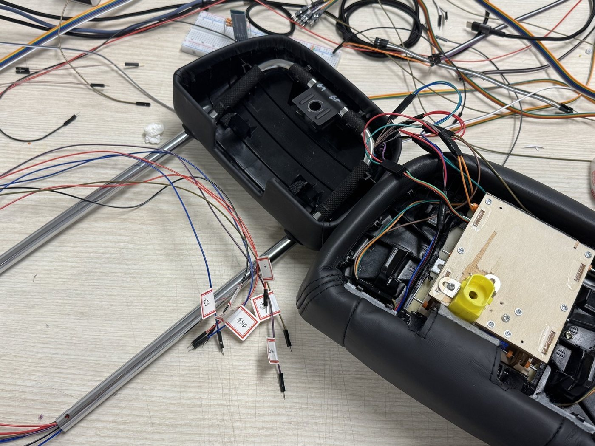
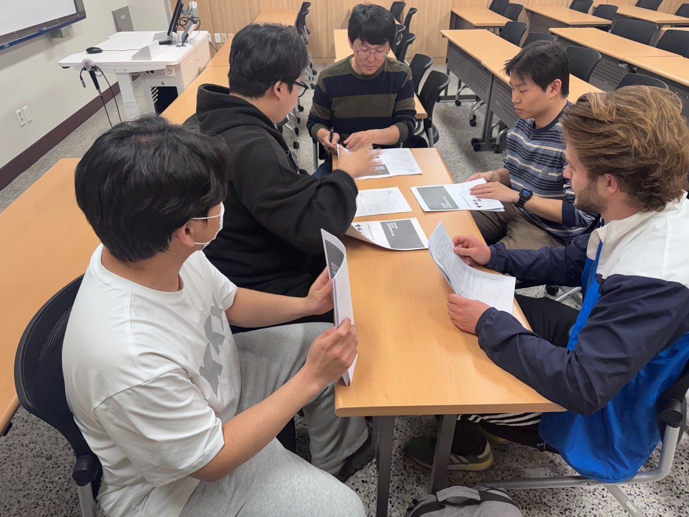
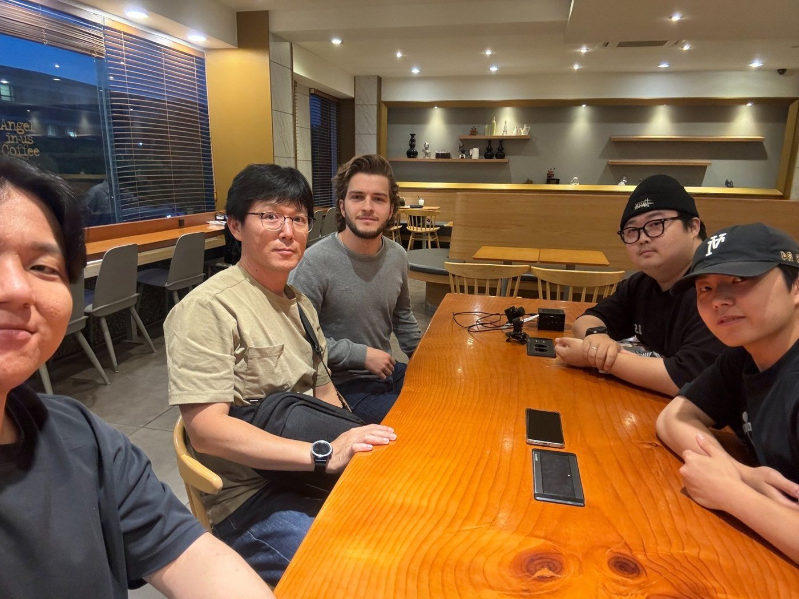
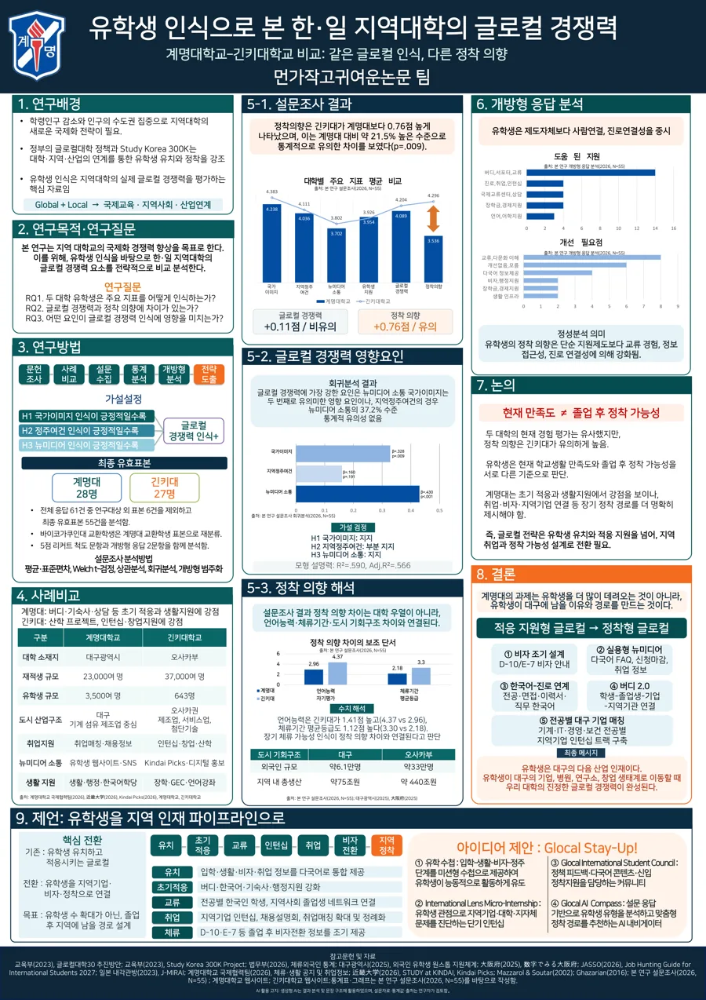

Background
졸음과 시선 이탈은 운전자가 스스로 알아차리기 어렵습니다.
화면 경고만으로는 놓치기 쉬워, 머리 바로 뒤에서
소리와 진동으로 직접 알려주는 장치를 만들었습니다.
문제적 사람들
2026
Team Portfolio
 전상훈팀장
전상훈팀장 장원준팀원
장원준팀원 최병재팀원
최병재팀원 남재현팀원
남재현팀원 유지호팀원
유지호팀원캡스톤(헤드레스트) 참여 김기주 · 조환호 · Deniz Felix Unglaube
팀
문제적 사람들입니다.
Works
스마트 헤드레스트 우수상 · 지역혁신 인재양성 연합 페스티발 · 학과 1위 · 교내 최우수 → DIFA · FIX 전시

졸음과 시선 이탈은 운전자가 스스로 알아차리기 어렵습니다.
화면 경고만으로는 놓치기 쉬워, 머리 바로 뒤에서
소리와 진동으로 직접 알려주는 장치를 만들었습니다.
카메라로 운전자 상태를 판단하고
네 단계로 경고를 키웁니다.
정차 차량 · 피험자 4명 · 위험 단계 진입 9회 · 소프트웨어 판단 시간 기준
검증 데이터 기준 · AIHub 원천 약 15TB에서 24,256장 선별



실주행·저조도 시험은 아직 하지 않았습니다. 리프트(전후 위치 조절) 기구는 설계·제작했지만 운반 중 파손되어 시연에서 제외했습니다.
참여 — 전상훈(팀장) · 김기주 · 조환호 · Deniz Felix Unglaube
안심집 지도 최우수상 · 2026 지역혁신 인재양성 연합 페스티발프로토타입 RISE 생성형 AI 공모전 장려상 → 보완 후 최우수
집 안의 사진을 넘어,
집 밖의 생활까지.
공항을 낀 대구 동구 지저동에서 집을 고를 때 놓치기 쉬운 항공기 소음, 밤길, 생활 동선을 내 생활유형에 맞춰 한 지도에서 비교합니다.

직접 체험하기
m.site.naver.com/2hSyT
유학생 인식으로 본 한·일 지역대학의 글로컬 경쟁력
계명대학교 유학생 28명과 긴키대학교 유학생 27명의 응답을 비교했습니다. 두 집단은 대학의 국제·지역 경쟁력을 비슷하게 평가했지만, 졸업 후 정착 의향은 긴키대 응답자가 평균 0.76점 높았습니다.
연구팀은 언어 능력과 체류기간의 차이를 함께 살피고, 지역 기업 인턴십과 다국어 취업 정보 제공을 제안했습니다.
포스터에 이름을 올린 전상훈과 윤재석이 함께한 연구입니다. 전상훈은 팀장으로 조사·분석과 포스터 제작, 발표 준비를 총괄했습니다. 제7회 국제지역학 포스터 논문 발표회에서 38개 팀 중 3위로 장려상을 받았습니다.

thank you
똑바로 해라.